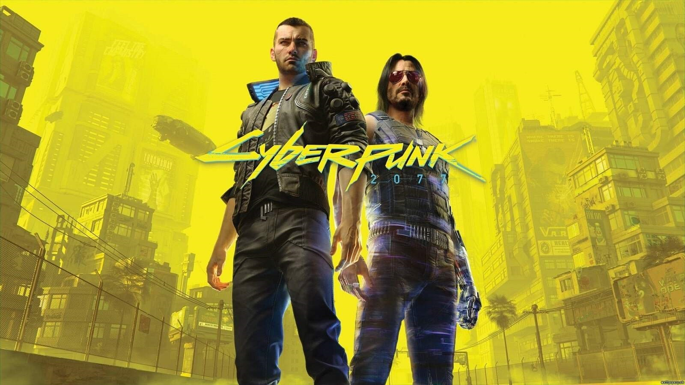

Latest Reviews
Cyberpunk 2077
 9.0/10Cyberpunk 2077 is a visually stunning game with an immersive story. Despite its rocky launch, recent patches have significantly improved the gameplay. The world of Night City feels alive, and the choices you make can greatly affect the story.
The Witcher 3: Wild Hunt
 10/10
10/10
The Witcher 3 remains one of the best RPGs ever made. With its rich storytelling, complex characters, and beautiful open world, it has set a standard for role-playing games. Even years after its release, it still holds up incredibly well.
Hades
 9.5/10
9.5/10
Hades is an addictive rogue-like dungeon crawler where you play as Zagreus, the son of Hades, trying to escape the underworld. The combat is fast and fluid, and the narrative is surprisingly deep for a game of this genre.